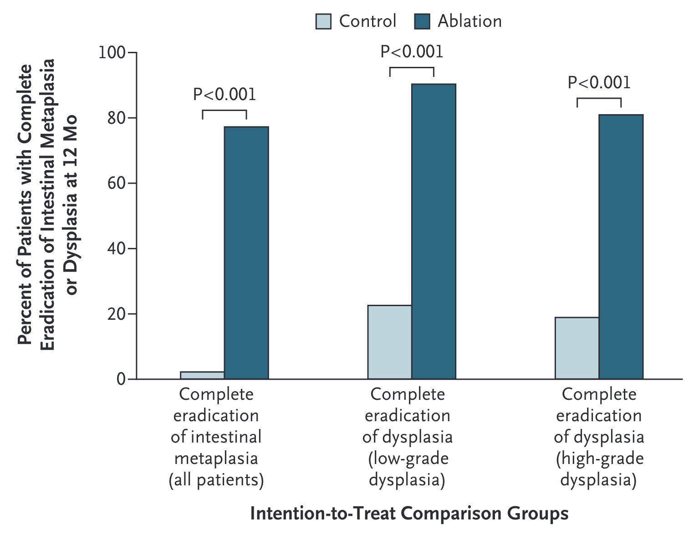
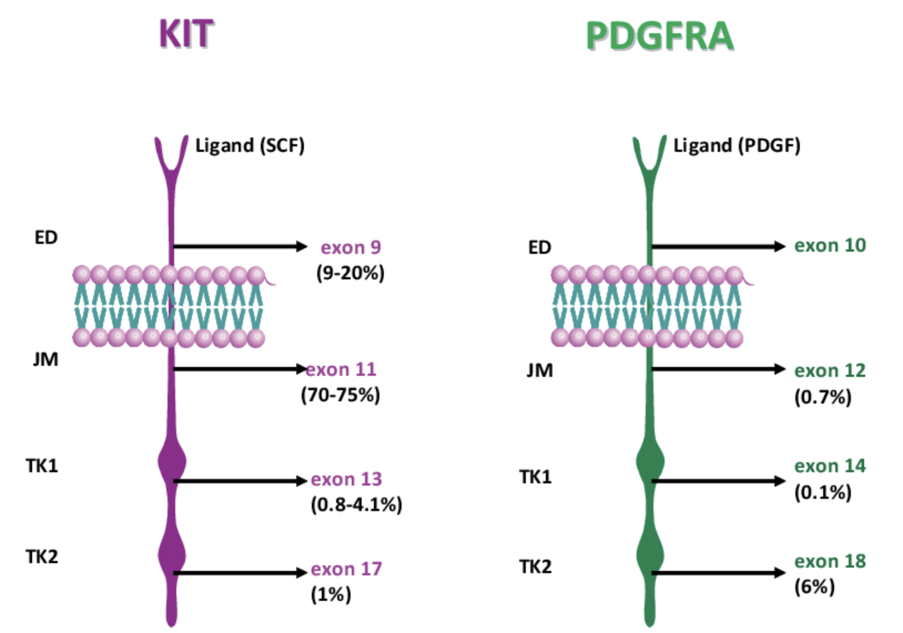
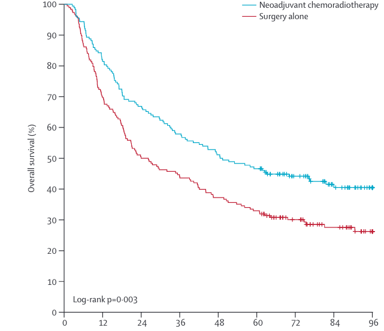
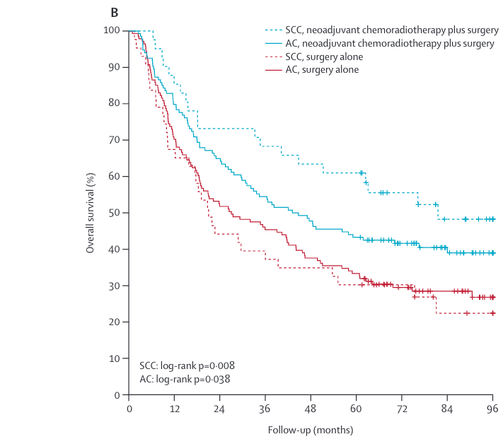
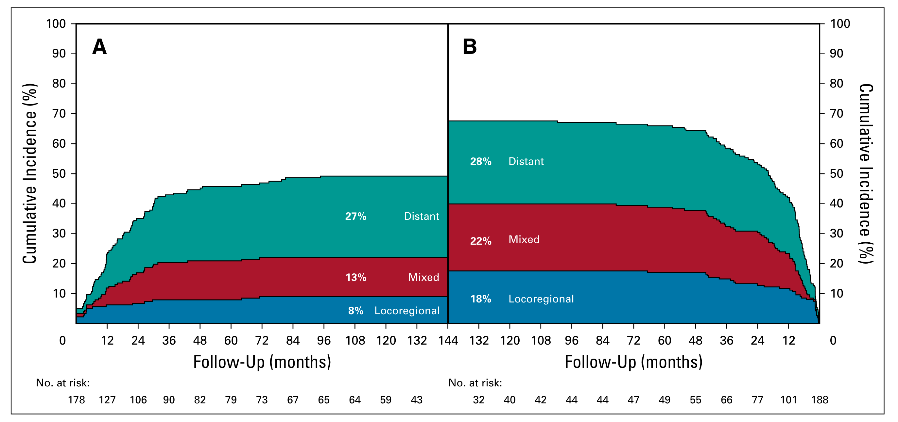
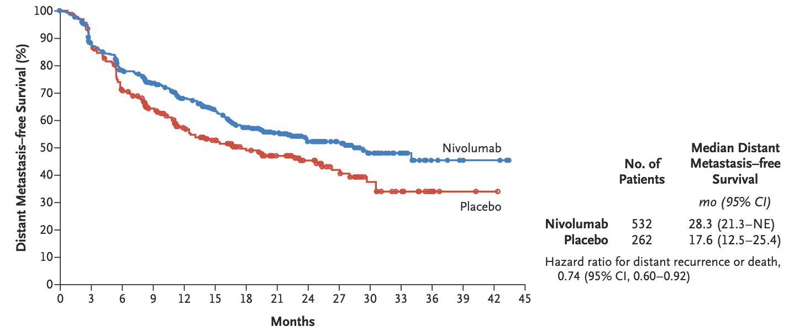

Colon Cancer
Gastrograffin Challange for malignant small bowel obstruction
GI Stromal Tumors
| Category | Stage | Treatment |
|---|---|---|
| [Dyplasia] | Tis | Radiofrequency Ablation |
| [Superficial Tumors] | T1a | Endoscopic Therapy |
| [Localized Tumors] | T1b T2 | Surgery |
| Locally-advanced | T3 or N+ | ChemoRT → Surgery |
| Metastatic | M1 | Chemotherapy +/- Radiation |
Pathophysiology
Origin with bowel wall stomach- small intestine - colon - esophagus
Tyrosine kinase gain of function mutations - KIT2 - PDGRFA3 Genetic inactivation - NF14 - succinate dehydrogenase (SDH)
Rapido Trial
Short-course RT \(\rightarrow\) Chemo \(\rightarrow\) Surgery vs ChemoRT \(\rightarrow\) TME +/- Chemo

Lancet Oncol December 7, 2020
Total Neoadjuvant Therapy
Induction Chemotherapy
Consolidation Chemotherapy
KIT and PDGFR Mutations

EORTC 22921
- Bossset Lancet Oncol p 184 2014
Prodige 23
- PHase 3 RCT n=461
- mFOLFIRINOX -> CRT -> Surgery -> Adjuvant Chemo
Patients with dysphagia almost always are T3 tumors (and don’t need EUS)
Symptomatic Tumors (Dysphagia)
Patients with dysphagia to solids or weight loss or tumor length >3cm are unlikely to have T1-2 tumors and can be initially evaluated with [PET Scan]
- Disease confined to the esophagus and regional nodes \(\rightarrow\) Locally-advanced
- Metastatic disease \(\rightarrow\) Metastatic
- N3 \(\rightarrow\) induction chemotherapy followed by chemoradiation and surgical evaluation.
ACOSOG ZZ9001
GIST Tumors >3cm randomized: - 1 year of imatinib 40mg - Observation
Recurrence-free survival 98% vs 83% No significant difference at 6 years
Imatinib may simply delay recurrences
Ref
SSG SVII
High-risk GIST randomized: - 1 year of imatinib 400mg - 3 year of imatinib 400mg
5-year Recurrence-free survival 48% vs 66% 5-year Overall Survival 82% vs 92%
Ref
Mutational Testing
Genetic mutations can predict respoinse to imatinib 1
Locally-advanced
For patients with locally-advanced esophageal cancer, improved survival with adjunctive therapy. There are two options:
- ChemoRT \(\rightarrow\) Surgery ([CROSS Trial])
- Chemo \(\rightarrow\) Surgery \(\rightarrow\) Chemo (EsoPEC Trial)
Positive Margins
- 368 esophageal cancer patients randomized:
- Surgery alone
- Chemo+RT \(\rightarrow\) Surgery
- 75% adenocarcinoma
- T3: 80%. T2: 17%
- median age=60
- longer survival with Chemo+RT \(\rightarrow\) Surgery
Gronchi JAMA Surg 2020
Imatinib 1yr vs 3 yr
- 368 esophageal cancer patients randomized:
- Surgery alone
- Chemo+RT \(\rightarrow\) Surgery
- 75% adenocarcinoma
- T3: 80%. T2: 17%
- median age=60
- longer survival with Chemo+RT \(\rightarrow\) Surgery
Joensuu JAMA Oncology 2020
Wild-Type GIST
- SDH-Deficient
- SDHx mutation
- SDH wild-type
- Associated with Carney-Stratakis syndrome
- No SDH Deficiency
- NF1-GIST
- Sporadic Wild-Type GIST
Weldon JCS 2017
NF1-associated GIST
- Multicentric (33%)
- Median age 46
- Small bowel >> Duodenum >> Stomach
Weldon JCS 2017
Recurrence Risk

Joensuu Lancet March 2012
CROSS - Survival by Histology

Miettinen Lasota Seminars in Diagnostic Pathology 2006:23:70-83
CROSS - Pathologic Response
pCR seen in 23% of patients with adenocarcinoma
pCR seen in 40% of patients with squamous cell carcinoma
CROSS - Sites of Failure
Sites of failure over time
ChemoRT + Surgery vs Surgery
ChemoRT appears to reduce risk of local or local+distant failure, but not isolated distant failure

Checkmate 577 Trial
Immunotherapy with nivolumab as adjuvant therapy after CROSS regimen for patients with residual disease
Nivolumab
PD-L1 agonist ligand
Interferes with tumor cell down-regulation of T cells
Active against stage IV esophageal cancer

Chekmate 577 Trial
EsoCA patients who received ChemoRT\(\rightarrow\) Surgery with residual disease (not pCR)
Randomized to one year of immunotherapy (nivolumab) vs Observation
Adjuvant nivolumab group had better survival
Checkmate 577 Trial

Neoadjuvant Chemo for EsoCA
- MAGIC trial (gastric): ECF2\(\rightarrow\)Surgery\(\rightarrow\)ECF vs Surgery
- OEO2 Trial: (esophageal) Chemo\(\rightarrow\)Surgery\(\rightarrow\) Chemo vs Surgery
- FLOT (gastric): FLOT3\(\rightarrow\)Surgery\(\rightarrow\) FLOT vs ECF\(\rightarrow\)Surgery\(\rightarrow\)ECF
- EsoPEC: (esophageal):FLOT\(\rightarrow\)Surgery\(\rightarrow\)FLOT vs ChemoRT\(\rightarrow\)Surgery (CROSS)
OEO2 Clinical Trial
802 Esophageal adenocarcinoma and squamous cell
Randomized to Chemo \(\rightarrow\) Surgery \(\rightarrow\) Chemo vs Surgery alone
Chemotherapy with ECF (Epirubicin, Cisplatin, 5FU)
5-year survival 23% for chemo+surgery vs 17% for surgery (HR 0.84 p=0.03)
EsoPEC Trial
Esophageal cancer
Randomized to CROSS vs FLOT
Better survival with FLOT
Metastatic
FOLFOX is first-line systemic therapy for metastatic GI cancers
- Dose-limiting toxicity is frequently peripheral neuropathy